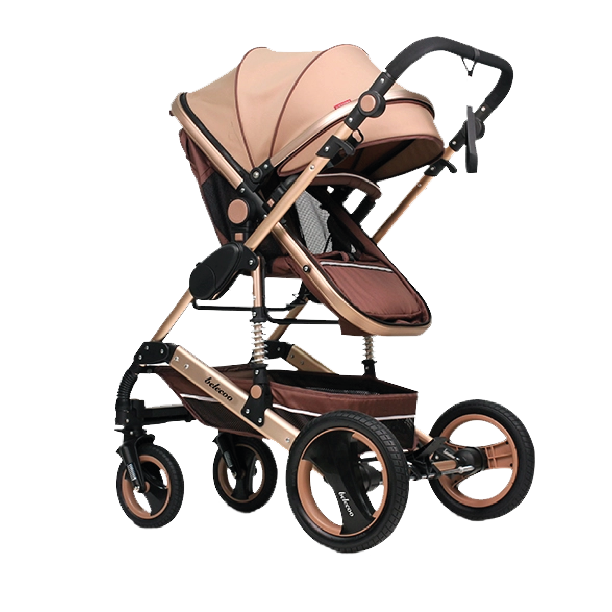

Légère , Pratique et robuste
Poussette Réversible Tendance Aluminium Robuste
Prix 1749 MAD
La poussette 2en1 tendance convient aux enfants de la naissance à 4 ans
acheter maintenant

Légère , Pratique et robuste
La poussette 2en1 tendance convient aux enfants de la naissance à 4 ans
acheter maintenant
Laisser le bébé faireface a la mére. En poussant la pousset , li est pratique que la mére observe le bébé. easy fold : Vous pouvez plier cette poussette en quelques secondes.